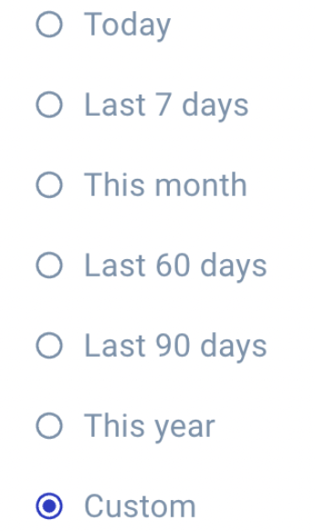
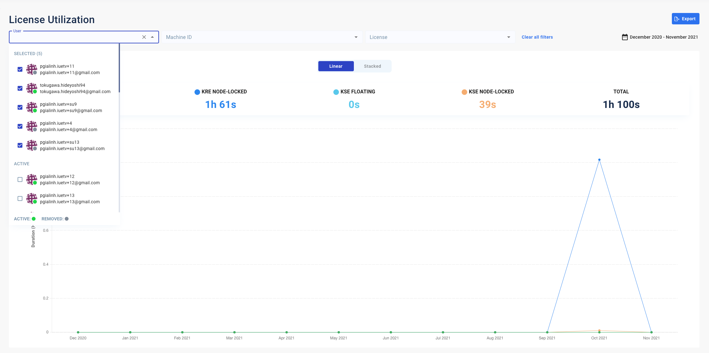

The Filter Bar
-
Date time picker:
On the top right of the Product Utilization page, you can see the date time picker that displays a specific date range. For example: Apr 1, 2021 - Mar 8, 2022. The Date time picker allows you to select a range of dates for which you want to view the license usage.
-
Click the Date time picker icon at the top right corner of the license utilization dashboard. The range of dates displays accordingly.

The buttons and their functions in the Date time picker are as given below:
-
Reset: Click this button to go back to the default date range. Refer to point 2 below, for more details on the default date range.
-
Apply: Click this button to apply the new date range that you select.
Note:-
If you select a date range but do not click on Apply, the current date range displays by default.
-
-
-
Default date range:

Keeps the default date range as it existed a year ago from [TODAY]:
- Start date = 1st of 12 months ago.
- End date = [TODAY]
-
As long as you apply the filter, the date range is valid for all sections on the page, including Chart and Session table.
-
For any date range or quick options that you select, the format is always: MMM DD, YYYY - MMM DD, YYYY, by default.
For example: Apr 01, 2021 - Mar 08, 2022.

-
The date ranges to the left of the license utilization dashboard display the various timelines that you can select as per your requirement:

Let us suppose that Now is 11/02/2022, 16:22:00. The table below displays the corresponding date ranges and their meanings:
Date range Meaning Now The date range will be from 11/02/2022 00:00:00 - 11/02/2022, 16:21:59. Last 7 days The date range will be from 05/02/2022 00:00:00 - 11/02/2022, 23:59. This month The date range will be from 01/02/2022 00:00:00 - 11/02/2022, 23:59:59. Last 60 days The date range will be from 14/12/2022 00:00:00 - 11/02/2022, 23:59:59. Last 90 days The date range will be from 4/11/2022 00:00:00 - 11/02/2022, 23:59:59. This year The date range will be from 01/01/2022 00:00:00 - 11/02/2022, 23:59:59. Custom You can set up a custom date range filter as per your requirement. Note:-
In the Date time picker, You can select any date range that is within a range of 1 year, at the maximum.
-
If you select a date range of more than 1 year (say, 366 days), an error message displays accordingly, stating Date range is invalid.
-
-
-
User email, machine ID, and license types:
Use the filter to select the user email, machine ID, and license type that you want to analyze. The statistics, graph, and session table below display the session durations for each license type within the 1-year period.
If you leave it blank by default, you will see the total duration used for all license types, machine IDs, and user emails, including the data of removed machine IDs and user emails.
In each filter category, you can search and select multiple options. You can filter for removed users, but not for removed machine IDs.

After you choose your filter options, the dynamic graph changes accordingly.